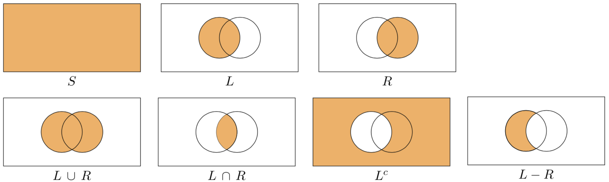
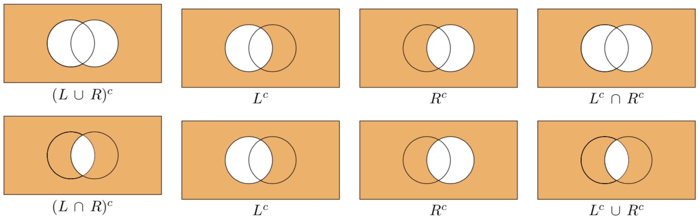

[1] 1 2[1] "numeric"Un insieme (o collezione, classe, gruppo, …) è stato definito da Georg Cantor nel modo seguente:
un insieme è una collezione di oggetti, determinati e distinti, della nostra percezione o del nostro pensiero, concepiti come un tutto unico; tali oggetti si dicono elementi dell’insieme.
Mentre non è rilevante la natura degli oggetti che costituiscono l’insieme, ciò che importa è distinguere se un dato oggetto appartenga o meno ad un insieme. Deve essere vera una delle due possibilità: il dato oggetto è un elemento dell’insieme considerato oppure non è elemento dell’insieme considerato. Due insiemi \(A\) e \(B\) si dicono uguali se sono formati dagli stessi elementi, anche se disposti in ordine diverso: \(A=B\). Due insiemi \(A\) e \(B\) si dicono diversi se non contengono gli stessi elementi: \(A \neq B\). Ad esempio, i seguenti insiemi sono uguali:
\[ \{1, 2, 3\} = \{3, 1, 2\} = \{1, 3, 2\}= \{1, 1, 1, 2, 3, 3, 3\}. \]
Gli insiemi sono denotati da una lettera maiuscola, mentre le lettere minuscole, di solito, designano gli elementi di un insieme. Per esempio, un generico insieme \(A\) si indica con
\[ A = \{a_1, a_2, \dots, a_n\}, \quad \text{con } n > 0. \]
La scrittura \(a \in A\) dice che \(a\) è un elemento di \(A\). Per dire che \(b\) non è un elemento di \(A\) si scrive \(b \notin A.\)
Per quegli insiemi i cui elementi soddisfano una certa proprietà che li caratterizza, tale proprietà può essere usata per descrivere più sinteticamente l’insieme:
\[ A = \{x ~\vert~ \text{proprietà posseduta da } x\}, \]
che si legge come “\(A\) è l’insieme degli elementi \(x\) per cui è vera la proprietà indicata.” Per esempio, per indicare l’insieme \(A\) delle coppie di numeri reali \((x,y)\) che appartengono alla parabola \(y = x^2 + 1\) si può scrivere:
\[ A = \{(x,y) ~\vert~ y = x^2 + 1\}. \]
Dati due insiemi \(A\) e \(B\), diremo che \(A\) è un sottoinsieme di \(B\) se e solo se tutti gli elementi di \(A\) sono anche elementi di \(B\):
\[ A \subseteq B \iff (\forall x \in A \Rightarrow x \in B). \]
Se esiste almeno un elemento di \(B\) che non appartiene ad \(A\) allora diremo che \(A\) è un sottoinsieme proprio di \(B\):
\[ A \subset B \iff (A \subseteq B, \exists~ x \in B ~\vert~ x \notin A). \]
Un altro insieme, detto insieme delle parti, o insieme potenza, che si associa all’insieme \(A\) è l’insieme di tutti i sottoinsiemi di \(A\), inclusi l’insieme vuoto e \(A\) stesso. Per esempio, per l’insieme \(A = \{a, b, c\}\), l’insieme delle parti è:
\[ \mathcal{P}(A) = \{ \emptyset, \{a\}, \{b\}, \{c\}, \{a, b\}, \{a, c\}, \{c, b\}, \{a, b, c\} \}. \]
I diagrammi di Venn sono uno strumento grafico molto utile per rappresentare gli insiemi e per verificare le proprietà delle operazioni tra di essi. Questi diagrammi prendono il nome dal matematico inglese del 19° secolo John Venn, anche se rappresentazioni simili erano già state utilizzate in precedenza da Leibniz e Eulero.
I diagrammi di Venn rappresentano gli insiemi come regioni del piano delimitate da una curva chiusa. Nel caso di insiemi finiti, è possibile evidenziare alcuni elementi di un insieme tramite punti, e in alcuni casi possono essere evidenziati tutti gli elementi degli insiemi considerati.
In sostanza, questi diagrammi sono un modo visuale per rappresentare le proprietà degli insiemi e delle operazioni tra di essi. Sono uno strumento molto utile per visualizzare la relazione tra gli insiemi e per capire meglio come si combinano gli elementi all’interno di essi.
Usiamo ora R
L’appartenenza ad un insieme si verifica con %in%.
Esaminiamo le funzioni Python per descrivere le relazioni tra insiemi. In particolare, dopo avere definito l’insieme universo e l’insieme vuoto, considereremo la relazione di inclusione che conduce al concetto di sottoinsieme. Analogamente si definisce il concetto di sovrainsieme. Mostreremo anche come valutare se due insiemi sono disgiunti (si dicono disgiunti gli insiemi con intersezione vuota).
print("Insieme Universo (tutti gli interi positivi fino a 10):")[1] "Insieme Universo (tutti gli interi positivi fino a 10):"print(Univ) [1] 0 1 2 3 4 5 6 7 8 9 10print("Tutti gli interi positivi pari fino a 10:")[1] "Tutti gli interi positivi pari fino a 10:"print(Super)[1] 0 2 4 6 8 10print("Tutti gli interi positivi dispari fino a 10:")[1] "Tutti gli interi positivi dispari fino a 10:"print(Disj)[1] 1 3 5 7 9print("Insieme di due elementi, 4 e 6:")[1] "Insieme di due elementi, 4 e 6:"print(Sub)[1] 4 6print("Un insieme vuoto:")[1] "Un insieme vuoto:"print(Null)integer(0)print('È "Super" un sovrainsieme di "Sub"?')[1] "È \"Super\" un sovrainsieme di \"Sub\"?"[1] TRUEprint('È "Super" un sottoinsieme di "Univ"?')[1] "È \"Super\" un sottoinsieme di \"Univ\"?"[1] TRUEprint('È "Sub" un sovrainsieme di "Super"?')[1] "È \"Sub\" un sovrainsieme di \"Super\"?"[1] FALSEprint('Sono "Super" e "Disj" insiemi disgiunti?')[1] "Sono \"Super\" e \"Disj\" insiemi disgiunti?"[1] TRUESi definisce intersezione di \(A\) e \(B\) l’insieme \(A \cap B\) di tutti gli elementi \(x\) che appartengono ad \(A\) e contemporaneamente a \(B\):
\[ A \cap B = \{x ~\vert~ x \in A \land x \in B\}. \]
Si definisce unione di \(A\) e \(B\) l’insieme \(A \cup B\) di tutti gli elementi \(x\) che appartengono ad \(A\) o a \(B\), cioè
\[ A \cup B = \{x ~\vert~ x \in A \lor x \in B\}. \]
Differenza. Si indica con \(A \setminus B\) l’insieme degli elementi di \(A\) che non appartengono a \(B\):
\[ A \setminus B = \{x ~\vert~ x \in A \land x \notin B\}. \]
Insieme complementare. Nel caso che sia \(B \subseteq A\), l’insieme differenza \(A \setminus B\) è detto insieme complementare di \(B\) in \(A\) e si indica con \(B^C\).
Dato un insieme \(S\), una partizione di \(S\) è una collezione di sottoinsiemi di \(S\), \(S_1, \dots, S_k\), tali che
\[ S = S_1 \cup S_2 \cup \dots S_k \]
e
\[ S_i \cap S_j, \quad \text{con } i \neq j. \]
La relazione tra unione, intersezione e insieme complementare è data dalle leggi di DeMorgan:
\[ (A \cup B)^c = A^c \cap B^c, \]
\[ (A \cap B)^c = A^c \cup B^c. \]
In tutte le seguenti figure, \(S\) è la regione delimitata dal rettangolo, \(L\) è la regione all’interno del cerchio di sinistra e \(R\) è la regione all’interno del cerchio di destra. La regione evidenziata mostra l’insieme indicato sotto ciascuna figura.

I diagrammi di Eulero-Venn che illustrano le leggi di DeMorgan sono forniti nella figura seguente.

Vediamo ora come si eseguono le operazioni tra insiemi con R.
Intersezione.
S1 <- seq(1, 10, by = 3)
S2 <- 1:6
S_intersection <- intersect(S1, S2)
print("Intersezione di S1 e S2:")[1] "Intersezione di S1 e S2:"print(S_intersection)[1] 1 4Unione. Si noti che il connettivo logico | corrisponde all’unione.
Insieme complementare.
S <- seq(0, 20, by = 2)
S_complement <- setdiff(0:20, S)
print("S è l'insieme dei numeri interi pari tra 0 e 20:")[1] "S è l'insieme dei numeri interi pari tra 0 e 20:"print(S) [1] 0 2 4 6 8 10 12 14 16 18 20print("S_complement è l'insieme dei numeri interi dispari tra 0 e 20:")[1] "S_complement è l'insieme dei numeri interi dispari tra 0 e 20:"print(S_complement) [1] 1 3 5 7 9 11 13 15 17 19print("È l'unione di S e S_complement uguale a tutti i numeri interi tra 0 e 20?")[1] "È l'unione di S e S_complement uguale a tutti i numeri interi tra 0 e 20?"[1] TRUEDifferenza tra insiemi.
[1] "Differenza tra S2 e S1:"[1] 5 10 20 25print("Differenza tra S1 e S2:")[1] "Differenza tra S1 e S2:"[1] 3 6 9 12 18 21 24 27Differenza simmetrica. La differenza simmetrica, indicata con il simbolo Δ, è un’operazione insiemistica definita come unione tra la differenza tra il primo e il secondo insieme e la differenza tra il secondo e il primo insieme. In modo equivalente, la differenza simmetrica equivale all’unione tra i due insiemi meno la loro intersezione.
Una coppia ordinata \((x,y)\) è l’insieme i cui elementi sono \(x \in A\) e \(y \in B\) e nella quale \(x\) è la prima componente (o prima coordinata) e \(y\) la seconda. L’insieme di tutte le coppie ordinate costruite a partire dagli insiemi \(A\) e \(B\) viene detto prodotto cartesiano:
\[ A \times B = \{(x, y) ~\vert~ x \in A \land y \in B\}. \]
Ad esempio, sia \(A = \{1, 2, 3\}\) e \(B = \{a, b\}\). Allora,
\[ \{1, 2\} \times \{a, b, c\} = \{(1, a), (1, b), (1, c), (2, a), (2, b), (2, c)\}. \]
Più in generale, un prodotto cartesiano di \(n\) insiemi può essere rappresentato da un array di \(n\) dimensioni, dove ogni elemento è una ennupla o tupla ordinata (ovvero, una collezione o un elenco ordinato di \(n\) oggetti). Una n-pla ordinata si distingue da un insieme di \(n\) elementi in quanto fra gli elementi di un insieme non è dato alcun ordine. Inoltre gli elementi di una ennupla possono anche essere ripetuti. Essendo la n-pla un elenco ordinato, in generale di ogni suo elemento è possibile dire se sia il primo, il secondo, il terzo, eccetera, fino all’n-esimo. Il prodotto cartesiano prende il nome da René Descartes la cui formulazione della geometria analitica ha dato origine al concetto.
A <- c("a", "b", "c")
S <- 1:3
cartesian_product <- expand.grid(A, S)
print("Prodotto cartesiano di A e S:")[1] "Prodotto cartesiano di A e S:"print(cartesian_product) Var1 Var2
1 a 1
2 b 1
3 c 1
4 a 2
5 b 2
6 c 2
7 a 3
8 b 3
9 c 3Si definisce cardinalità (o potenza) di un insieme finito il numero degli elementi dell’insieme. Viene indicata con \(\vert A\vert, \#(A)\) o \(\text{c}(A)\).
print("La cardinalità dell'insieme prodotto cartesiano è:")[1] "La cardinalità dell'insieme prodotto cartesiano è:"[1] 9Potenza del prodotto cartesiano
A <- c("Head", "Tail")
p2 <- expand.grid(A, A)
print("Il quadrato dell'insieme A è un insieme che contiene:")[1] "Il quadrato dell'insieme A è un insieme che contiene:"[1] 4print(p2) Var1 Var2
1 Head Head
2 Tail Head
3 Head Tail
4 Tail Tailp3 <- expand.grid(A, A, A)
print("L'insieme A elevato alla terza potenza è costituito da:")[1] "L'insieme A elevato alla terza potenza è costituito da:"[1] 8print(p3) Var1 Var2 Var3
1 Head Head Head
2 Tail Head Head
3 Head Tail Head
4 Tail Tail Head
5 Head Head Tail
6 Tail Head Tail
7 Head Tail Tail
8 Tail Tail Tail